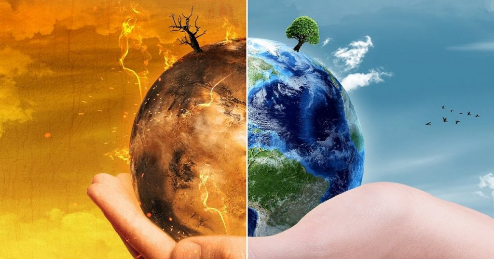
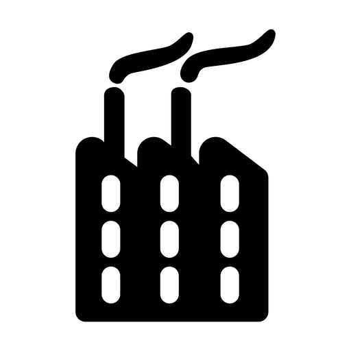
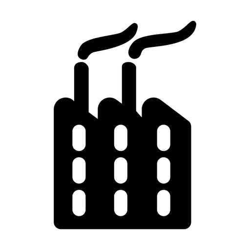

Combate às alterações climáticas. Assim como no ODS 11, este objetivo confere importância à resiliência e a capacidade de adaptação dos grupos humanos diante dos riscos associados ao clima e às características naturais de todos os países.
#13.1-Reforçar a resiliência e a capacidade de adaptação a riscos relacionados ao clima e às catástrofes naturais em todos os países.
-Meta 2
#13.2-Integrar medidas de mudança de clima nas políticas, estratégias e planejamentos nacionais.
-Meta 3
#13.3-Melhorar a educação, aumentar a conscientização e a capacidade humana e institucional sobre mitigação, adaptação, redução de impacto e alerta precoce da mudança de clima.
-Meta 4
#13.a-Implementar o compromisso assumido pelos países participantes da Convenção Quadro das Nações Unidas sobre Mudança do Clima [UNFCCC] para uma meta de mobilizar conjuntamente US $ 100 bilhões por ano a partir de 2020, de todas as fontes, para atender às necessidades dos países em desenvolvimento, sem contexto das ações de mitigação aplicáveis e transparência na implementação; e operacionalizar plenamente o Fundo Verde para Clima por meio de sua capitalização ou mais cedo possível.
-Meta 5
#13.b-Promover mecanismos para a criação de capacidades para o planejamento relacionado à mudança do clima e à gestão eficaz, nos países menos desenvolvidos, inclusive com foco em mulheres, jovens, comunidades locais e marginalizadas.
-Atualmente é de conhecimento de quase toda a população mundial, as alterações climáticas que vem ocorrendo por conta do aquecimento global, catástrofes gigantecas em todas as partes do mundo, ciclones, tornados, tempestades tropicais, aumento do nivel do mar, derretimento das calotas polares, aquecimento das águas oceânicas, secas, e aumento da temperatura da terra anualmente, todos esses fatores foram conseguintes de práticas e atividades humanos prejudiciais ao nosso planeta.
-Com a chegada da Idade Moderna, e as inumeras revoluções industriais ao redor do mundo a liberação de dióxido de carbono, metano, cfc's, e outros tipos de gases, além de desmatamento e queimadas, aumentou significamente, estes liberados pelas grandes fábricas e automóveis. A ODS 13 veio exatamente para alertar sobre os riscos das mudanças climáticas caso não seja tomadas práticas que diminuam o aumento destas.
-É necessário que medidas sejam tomadas para solucionar esse destino catastrófico que nos espera, medidas simples como:
-Por parte das pessoas...
Sempre que possível caminhar e andar de bicicleta para ir a lugares próximos a fim de diminuir a liberação de fumaça por automóveis.
Evitar de queimar lixo;
Orientar pessoas a não queimarem lixo também;
Não jogar garrafas de vidro, pontas de cigarro e outras coisas que podem ocasinar incêndios em locais como pastagens e/ou onde existe um material em abundância que seja inflamável;
Plantar árvores e outras plantas, pois elas ajudam a diminuir os níveis de gás carbônico, e a liberar oxigênio;
Não desmatar;
Colocar filtros de fumaça em carros, motos, etc;
-Por parte do estado e empresas...
Implementação por parte do estado de programas de reflorestamento, criação de reservas florestais, maior arborização de zonas urbanas entre outras medidas para aumento da flora terrestre;
As empresas que detém fábricas de produção de produtos estudarem métodos para não liberar poluentes em grande escala para a atmosfera;
Criação de mais leis que punam quem desmata, e empresas que liberam poluentes em excesso;

"A mãe natureza chora, a cada momento em que se vê sendo destruída, mas ela não fica passiva a isso, ela revida. Os seres humanos apenas não veem que tudo que eles fazem será retribuído igualmente pela ira da natureza. Cabe a nós como seres racionais tomar a mãe natureza como nossa aliada, ou nossa inimiga..."

 
